Assembly: 认识 8086 处理器
- TAGS: Assembly
主要内容
- 认识 8086 处理器
- 汇编语言和汇编软件
- 如何执行编译好的程序
认识 8086 处理器
主要内容
- 8086的通用寄存器
- 8086的内存访问和字节序
- 程序的分段
- 程序的重定位难题
- 段地址和偏移地址
- 8086内存访问的困境
- 8086选择段地址的策略
- 8086的内存访问过程
- 逻辑地址和分段的灵活性
8086的通用寄存器
认识 INTEL 8086 处理器内部的通用寄存器
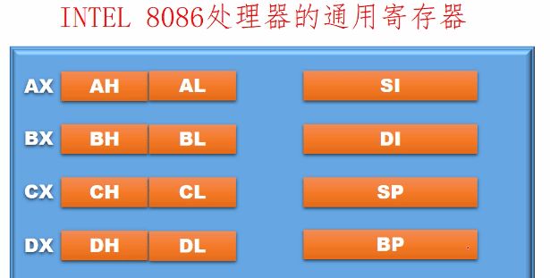
在 INTEL 8086 处理器有 8 个十六位的通用寄存器。
AX{AH AL} SI
BX{BH BL} DI
CX{CH CL} SP
DX{DH DL} BP
通用的意思是它们可以根据需要可以用于多种目的。比如，可以在这些寄存器之间互相传递数据或者做各种算术逻辑运算；可以在这些寄存器和内存之间传递数据或者做各种算术逻辑运算。
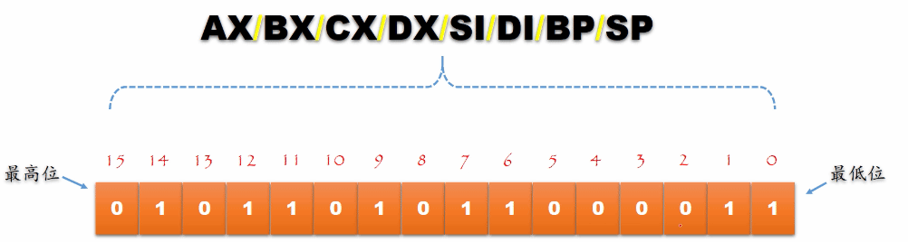
这 8 个寄存器都是 16 位的，由 16 个比特组成。为了方便描述每个比特都有一个编号，从右往左依次为 0、1、2、3、4、5、6、7、8、9、10、11、12、13、14、15，其中最右边的比特叫 最低位 ，最左边的比特叫 最高位 。
16 位的寄存器可以保存 16 位的二进制数。如上图所示，寄存器保存了一个二进制数 0101 1010 1100 00011，等于十进制的 23235，等于十六进制 5AC3

使用二进制很不方便也很不直观，所以以后不再用二进制来表示数值，这样很麻烦。而是使用上图中的方法。这里寄存器用一个矩形来表示，寄存器的内容用十六进制给出，比如这里是 5AC3。
为什么计算领域的人都偏爱十六进制呢？
从一个十六进制数可以很容易知道二进制形式，反过来从一个二进制数很容易看出它的十六进制形式。如
# 2 进制转 16 进制 1000010100101111 # 16 个比特 将它从右往左分成 4 个 4位 1000 0101 0010 1111 # 右边的 4 位 1111 对应 16进制的 f，0010b = 2H，0101 = 5H，1000 = 8H 852f # 16 进制转 2 进制 3C09 只需要将每个 16 进制数写成 4 位 2 进制数。 9H = 1001b，0H = 0000，CH = 1100，3H = 0011 0011110000001001
使用 十六进制特别简短明了 ，这是我们为什么偏爱十六进制的原因。
在 8086 中，通用寄存器的前 6 个也就是 AX/BX/CX/DX 又各自可以拆分成两个 8 位的寄存器来使用，总共 8 个 8 位的寄存器，他们分别是 AH/AL ， BH/BL ， CH/CL ， DH/DL 。这样一来，当需要在寄存器与寄存器之间、寄存器和内存之间进行 8 位的数据传送或者 8 位算术逻辑运算时，使用它们就很方便。

范例： 寄存器 AX 的组成：高字节、低字节
AX
AH AL
15 ... 8 7 ... 0
--------- -------
高字节 低字节
AX 可以分成两个独立的寄存器 AH，AL。位 0 到位 7 这个 8 个比特属于 AL。从位 8 到位 15 这 8 个比特属于 AH。
在计算里一个字等于两个字节，因此 AX 长度为一个字 (16个比特)，寄存器 AH 是寄存器 AX 的 高字节 部分，寄存器 AL 是寄存器 AX 的 低字节 部分。
范例： 寄存器 AX 的值
AX
AH AL
--------- -------
3E 2F
寄存器 AX 是由寄存器 AH 和 AL 组成，所以寄存器 AX 的值也是寄存器 AH 和 寄存器 AL 组成的。上例中 AX 的值是 3E2F，改变 AH 的值(00)对寄存器 AL 没有影响，但寄存器 AX 值会跟随改变，变成 002F。
练习
INTEL 8086 有哪几个通用寄存器？这些寄存器的长度是多少？
答：AX/BX/CX/DX/SI/DI/BP/SP 这 8 个通用寄存器。长度都 16 位的，长度是 1 个字，合两个字节。
以上寄存器中，有哪些可以分为两个8位的寄存器来用？这些8位的寄存器叫什么名字？
答：AX/BX/CX/DX 可以分成两个 8 位的寄存器。分别叫 AH,AL/BH,BL/CH,CL/DH,DL
如果向寄存器 DH 写入数字 08(十六进制)，向寄存器 DL 写入数字 3C(十六进制)，则寄存器 DX 值是多少(用十六进制表示)？
答：DX 是由 DH(高字节部分) 和 DL(低字节部分) 组成，AX 的值为 083C
8086的内存访问和字节序
了解8086如何访问内存以及内存访问的字节序
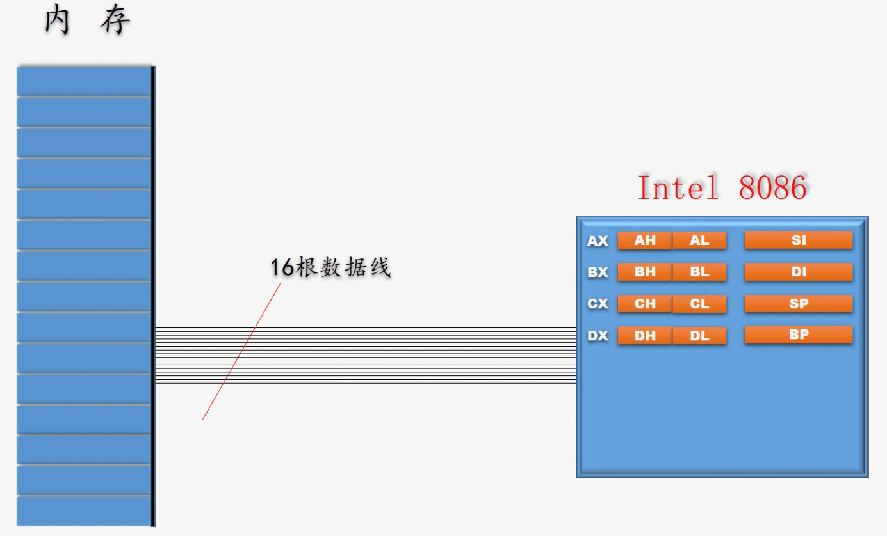
intel 8086有16根数据线，这16根数据线与内存相连可以向内存写数据或者从内存中读数据，它是双向的。
数据线的宽度和8086寄存器的宽度一致都是16位的。
以寄存器SI为例，这是16位寄存器，比特编号从0到15. 这里寄存器保留了C05B这个数。如何将它写入内存？
内存写入
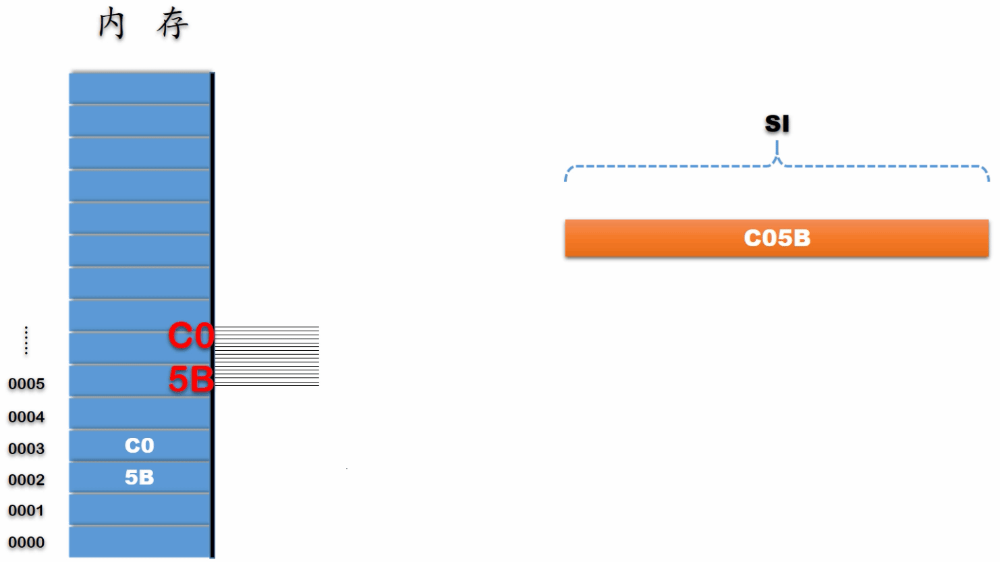
内存是由字节单元组成，字节单元长度都是8位的。可以将16位的数据拆开分成2个8位的数据，分别写入2个相临字节单元。
假定在写入内存时，指针的地址是0002，寄存器SI的内容C05B通过16位数据线到达内存后被拆分成2个8位，其中C0是高字节部分，5B是低字节部分。 5B被写入到0002的单元，C0被写入到0003的单元。地址为0002的单元是低地址单元，地址为0003的单元是高地址单元。
当我们写入一个字时，如果低字节写入内存的低地址单元，高字节写入内存的高地址单元，那么我们称之为是 低端字节序 的。
内存读取
读的时候也是一样。如果是从内存地址为0002的地址开始读取一个字并传送到寄存器SI中，低地址单元中的5B和高地址单元中的C0被分别取出，然后 在数据线上合并成一个字C05B，最后传送到寄存器SI。
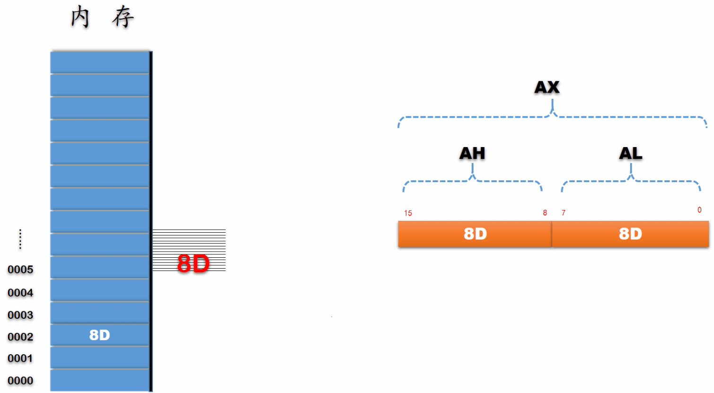
范例：寄存器AX中数据8D写入读取
- AH，AL是8位寄存器，AH内容为8D,写入内存地址0002单元
- 数据线宽度是16位的，只使用一半。通过16根数据线的一半写入内存。
- 写入地址为0002的单元
- 读出，从地址为0002的单元读取一个字节并传送到寄存器AL中
- 这个地址单元中的8D通过16根数据线中的一半被送出
- 传送到寄存器AL
练习
寄存器BX的内容是55AA(十六进制)，在将它写入内存时，指定的地址是0008，低端字节序。 那么写入后，将占用几个内存单元？它们的地址分别是多少？它们的内容是什么(采用十六进制)？
答案：占用2个内存单元。地址分别为0008，0009. 地址为8的单元是AA, 地址为9的单元是55
采用低端字节序写入内存时，低字节占据内存低地址部分，高字节占据内存高地址部分。它们的内容是AA55

程序的分段
了解程序在内存中是如何分段存放的
处理器是自动取指令和执行指令的器件。为了解决问题我们需要编排指令，这个过程叫做编程。编程的结果是生成了一个 程序。如下图在内存中编排了一个程序，这个程序是从内存地址为0地方开始存放的。

代码段
处理器是按顺序取指令并执行指令的，所以指令必须是按顺序一条条集中存放。图中黄色部分是集中存放的指令。
这此指令集中在一起形成了程序的代码部分或者指令部分，由于这些代码在内存里占用了一个连续的区段，所以我们称之为程序的代码段。
从图中看出，这个代码段的起始内存地址是0。
数据段
指令在执行时需要用到数据，这些数据也是放在内存中的。图中蓝色部分是集中存放的数据。这些数据集中在一起形成了程序的数据部分，由于这些 数据在内存里占用了一个连续的区段，所以我们称之为数据段。图中数据段在内存中的起始地址是0C00
程序的指令
通常来说，指令是由操作码和操作数据组成。
对处理器来说，操作码隐含了如何执行该指令的信息，如指令是作什么的以及怎么去做。

第一条指令
- 第1条指令是从内存地址为0位置开始存放的，一共3个字节。
- 其中第1个字节的A1是操作码，隐含3个方面信息。
- 这条指令是传送指令
- 被传送的目标位置是AX寄存器
- 被传入的数字位于内存中的另一个地方，它的地址是16位的，2个字节，而且是紧跟在操作码后面。
- 操作码A1后面是2个字节，00和0C, 共同组成了一个地址。8086处理器是低端字节序的，所以这个地址是0C00
- 第1条指令的功能是将内存地址0C00处的一个字传送到AX寄存器中。
- AX寄存器的字长是16位，所以这条指令在执行时将再次访问内存，从内存地址0C00处取得一个字，这2个字节是3C05, 他们将合并成一个16位数字053C, 然后再传送给AX寄存器。
- 寄存器AX内容是053C
第二条指令
- 第2指令是从内存地址为0003的位置开始存放的。一共4个字节。
- 其中前2个字节0306是操作码，所隐含的信息是
- 这条指令是加法指令
- 第1个相加的数字位于AX的寄存器里，而且相加的结果也保存在AX寄存器
- 第2个相加的数字位于内存中另外一个地方，它的地址跟在操作码后面，是由2个字节组成的。
- 操作码后面2个字节是02和0C，共同组成一个16位地址。因为8086处理器是低端字节序的，所以这个地址是0C02
- 第2条指令的功能是，将寄存器AX的内容和内存地址0C02处的字相加，结果在AX中。
- 这条指令在执行时，将再次访问内存。从内存地址0C02处取出一个字0F8B，然后将0F8B和寄存器原有的数字053C相加，相加的结果保存在AX中，结果是14C7。
程序的重定位难题
研究一个有关程序重定位的困境
为了自动的取指令和执行指令，处理器需要一个寄存器来自动跟踪每条指令，假定它的名字叫IPR, IPR的内容始终是下一条要执行的指令。

上图中
- 在程序开始之前，我们需要将第1条指令传送到这个寄存器IPR。这程序是从内存地址为0的地方开始存放的，寄存器IPR内容为0000。
- 当程序开始执行时，处理器把IPR的内容放到地址线上，第1次发出的地址是0，所以是从内存地址为0的地方取出第1条指令并加以执行
- 第1条指令的内容是，将内存地址0C00处的一个字传送到AX寄存器。与此同时IPR的内容被自动更新为下一条指令的地址0003。下1条指令地址 = 当前指令的地址+当前指令的长度。3 = 0 + 3
- 第2条指令同理，第1条指令执行后，再用IPR中的内容到内存中取指令并执行。与此同时IPR的内容被自动更新为下一条指令的地址0007。 7 = 当前指令地址3 +当前指令长度 4
- 以此类推
如果程序在内存中的地址不是从同0000开始的，就有出现问题。 因为内存中数据的地址是写死的，使用了绝对内存地址，如第1条指令的0C00和第2条指令的0C02这些是物理地址。
要解决这样的问题，需要在程序加载之后临时改变其位置，这样做是很不合理的，因为一个程序的指令少则几十条多则百万千万条。
能够重定位，这是对程序的基本要求。
段地址和偏移地址
通过引入数据段寄存器来解决程序的重定位问题
我们说过指令中不能使用物理地址，否则程序无法重定位。
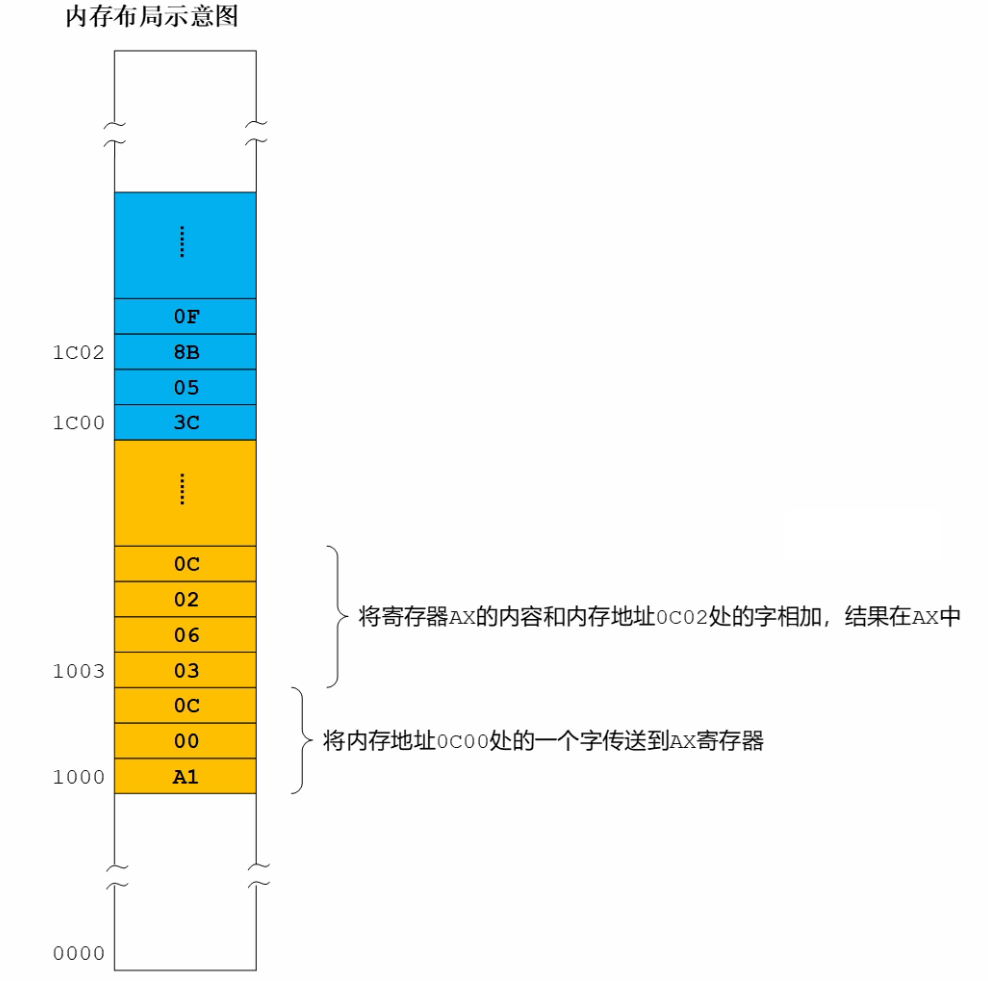
先来观察数据段，
- 数据段的起始地址是1C00，这个地址也是段内第1个字053C的地址。换一个角度看，段内第1个字053C和数据段内起始位置的距离是0个字节，所以可以说第1个字053C距离段起始处的偏移量是0.
- 段内第2个字0F8B，他的物理地址是1C02。换一个角度看，这个字和数据段起始位置的距离是2个字，所以可以说这个字距离段起始处的偏移量是2.
因为这个原因，在数据段内每个字都有2个属性，分别是他们的物理地址1C00和1C02，另一个是他们相对于段起始处的偏移量0和2。我们把这些字相对于段起始处的偏移量叫做 偏移地址 。
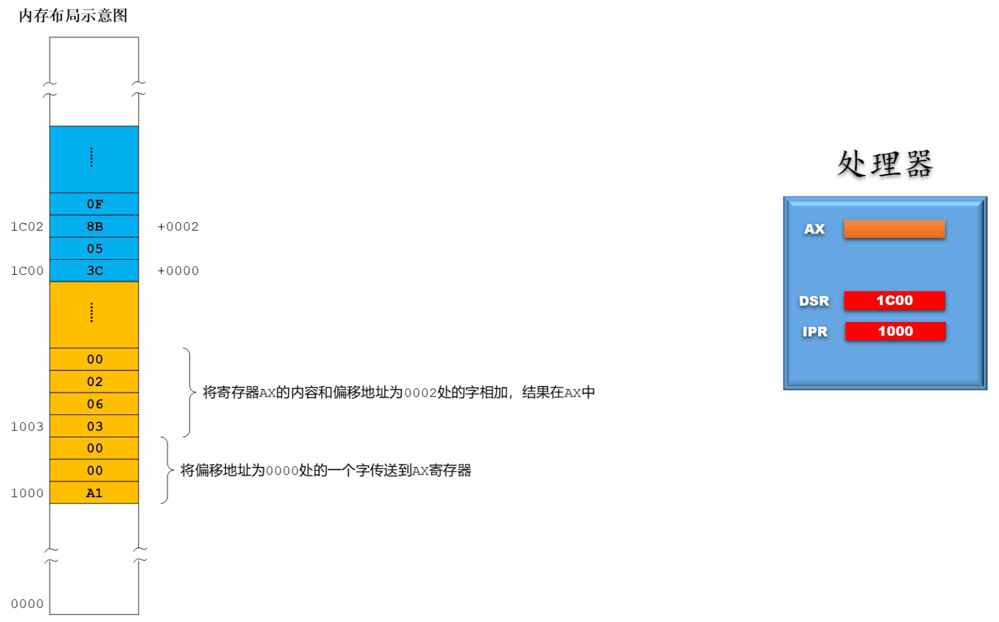
这2个字的偏移地址分别是0000和0002，同时把偏移地址标注在这2个字的右侧并且用 + 加号来表明他们是偏移地址。
代码段中的指令也做了修改
- 第1条指令，原先的物理地址换成了第1字的偏移地址0000。 意思是将偏移地址为0000处的一个字传送到AX寄存器。
- 第2条指令，原先的物理地址改成了第2字的偏移地址0002。意思是将寄存器AX的内容和偏移地址为0002处的字相加，结果在AX中。
为了配合这种改变，我们在处理器中增加了 数据段寄存器DSR . DSR保存了数据段的起始物理地址。
- 程序开始前，先将第1条指令的物理地址传送到 指令指针寄存器IPR ，1000，
- 将数据段的起始物理地址传送到数据段寄存器DSR, 1C00
- 处理器开始取指令并执行指令，第1条指令
- 先用IPR的内容发出地址1000，访问内存取得第1条指令，“将偏移地址为0000处的一个字传送到AX寄存器”
- 在执行指令时，访问内存需要用到数据段寄存器DSR，此时是将DSR中的内容1C00和指令中的偏移地址0000相加，得到物理地址1C00。于是处理器将1C00做为地址发送给内存，从内存地址1C00处取得一个字053C，传送给AX寄存器。
- 与此同时IPR的内容被自动更新为，下1条指令地址，1003
- 第2条指令
- 处理器利用IPR的内容1003，访问内存取得第2条指令，“将寄存器AX的内容和偏移地址为0002处的字相加，结果在AX中”
- 在执行指令时，访问内存需要用到数据段寄存器DSR，此时是将DSR中的内容1C00和指令中偏移量0002相加，得到物理地址1C02。于是处理器用1C02访问内存，从内存地址1C02处取得一个字0F8B，最后将0F8B和寄存器中原有内容053C相加，结果存回AX寄存器。
经过这样的软硬件改造后，程序不用做任何修改就可随便放到内存中任何位置加以执行都没有任何问题。
8086内存访问的困境
了解intel 8086处理器因硬件设计的特点而在访问内存时所面临的挑战

8086有16根数据线，一次最大可以访问16位，也是就2个字节数据，或都一次最大可以访问1个字。
为了访问内存，还需要地址线和内存相连来指定访问的是哪个内存单元。8086有20根地址线。可以表示20位2进制数，最小内存地址20个0(十六进制00000)，最大内存地址20个1(十六进制FFFFF)。
20根地址线可以访问的内存数量是， \(2^20=1048576=1024KB=1MB\) ,
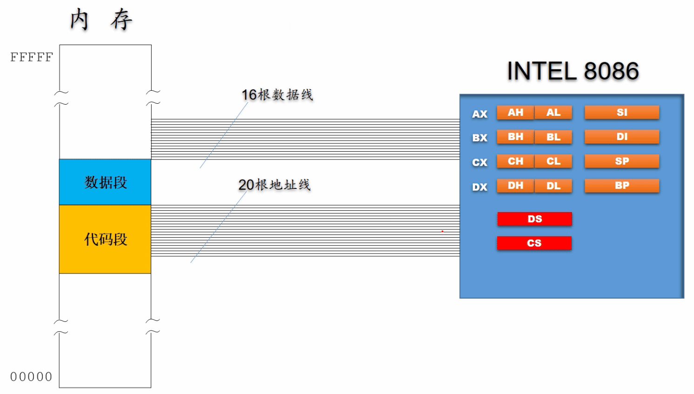
要取指令和数据就必须发出地址。intel 8086处理器内部集成了一些和内存访问有关的寄存器。
- 代码段寄存器CS：用于存放代码段的起始物理地址。通过代码段寄存器CS可以跟踪每一条指令的地址。处理器可以利用它实现自动取指令执行指令。
- 数据段寄存器DS：用于保存数据段的起始物理地址。在指令执行期间，数据段寄存器中的内容和指令中的偏移地址相加，就得到了物理地址，通过这个物理地址就可以取得操作数。
但是这些寄存器的宽度都是16位的，容纳不了20位的内存地址。
8086选择段地址的策略
了解intel 8086处理器在选择段地址时所采取的策略和方法
我们已经知道程序在内存中是分段的，8086处理器中有代码段寄存器CS和数据段寄存器DS，他们用来保存代码段的起始地址和数据段的起始地址。但他们都是16位的，无法容纳20位物理地址。
我们发现，有些内存地址的16进制形式是以0为结尾的，如0000, 00010, 00020, A0000,FFFF0等。如果将这些地址末尾的0去掉，剩下的部分就可以放到段寄存器里了。

12560 12560 / 10 = 1256 #16进制运算 75104 / 16 = 4694 #10进制运算 0001 0010 0101 0110 0000 0000 0001 0010 0101 0110 #右移4位
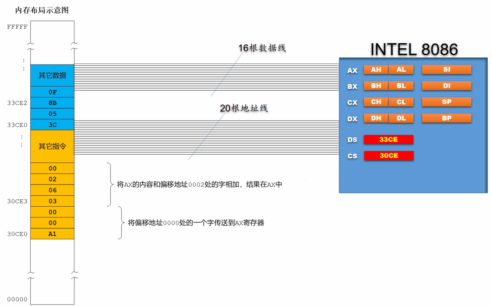
在8086系统中，由于段寄存器的限制，并不是所有内存地址都可以成为段地址，只有那些以0为结尾的内存地址才可能成为段地址。
上图中
- 程序的代码段起始于30CE0，将末尾的0去掉，剩下的30CE就可以传送到代码段寄存器CS中
- 程序的数据段起始于物理地址33CE0，将末尾的0去掉，剩下的33CE就可以传送到数据段寄存器DS中
- 再用段寄存器中的内容访问内存时，可以再把末尾的0加上，就是还原到原先的20位物理地址。也可以说是左移4位或者乘以16。
第1条指令起始物理地址是30CE0，长度是3个字节。在第1条指令执行期间，处理器必须把代码段寄存器CS改为第2条指令内存的地址30CE3。但是CS的长度是16位存不下，也不能把末尾的3去掉。如何解决？
8086的内存访问过程
8086处理器用段地址和偏移地址访问内存的过程
仅仅依靠段寄存CS是无法取指令的，因为它的宽度不够只有16位。
我们知道，在代码段内每1条指令都有他的物理地址，还有一个相对段起始处的偏移地址。8086处理器在内部集成了一个 指令指针寄存器IP ，用于保存指令的偏移地址。
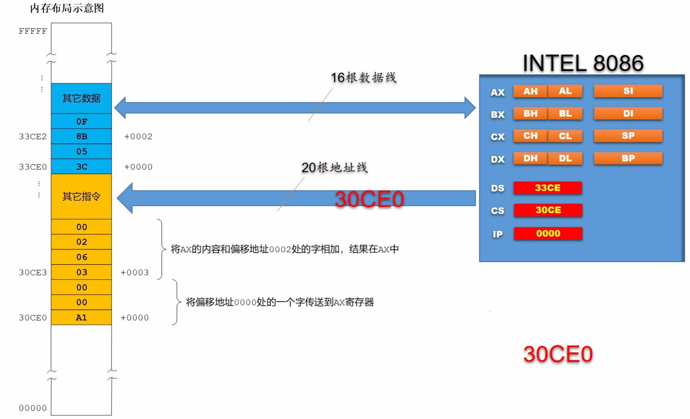

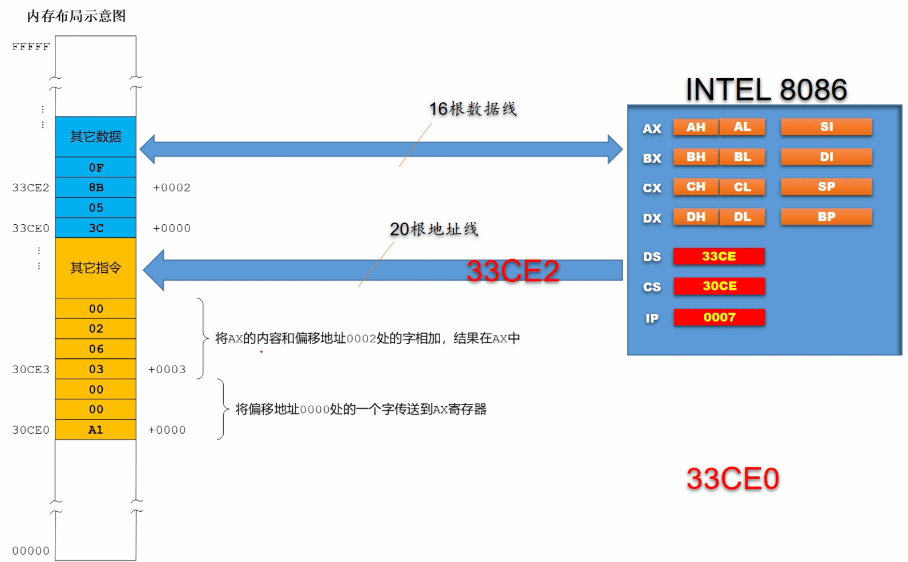
跟踪程序的执行过程，来了解这些寄存器如何工作的，以及8086是如何取指令执行指令的
- 程序开始执行前
- 先把代码段的起始物理地址30CE0右移4位或者说把末尾0去掉，得到30CE并传送到代码段寄存器CS，此时段寄存器CS内容为30CE
- 把数据段的起始物理地址33CE0右移4位或者说把末尾0去掉，得到33CE并传送到数据段寄存器DS，此时段寄存器DS内容为33CE
- 把第1条指令的偏移地址0000，传送到指令指针寄存器IP，此时IP的内容为0000
- 第1条指令
- 处理器开始取指令阶段
- 首先，将段寄存器CS中的内容30CE左移4位，得到20位的数字30CE0
- 用30CE0和指令指针寄存器IP中的内容0000(数字0)相加，得到20位的物理地址30CE0，并送入地址线，去访问内存
- 这将从物理地址30CE0处取得第1条指令，并加以执行。指令的意思是“将偏移地址0000处的一个字传送到AX寄存器”
- 这将再次访问内存，在指令执行时访问内存需要用到数据段寄存器DS。此时是把段寄存器DS中的内容33CE左移4位得到33CE0，用33CE0和指令中的偏移地址0000相加得到20位物理地址33CE0，把这个地址送入地址线去访问内存。
- 这将从物理地址33CE0处得到一个字053C，然后送入AX寄存器。
- 与此同时，指令指针寄存器IP将修改为下一条指令的偏移地址0003，这个地址是用原有数字0与第1条指令长度3相加得到。
- 处理器开始取指令阶段
- 第2条指令
- 执行完第1条指令，处理器再次进入取指令阶段
- 将段寄存器CS中的内容30CE左移4位，得到20位数字30CE0。
- 用30CE0和指令指针寄存器IP中的内容0003(数字3)相加，得到20位的物理地址30CE3，并送入地址线，去访问内存
- 这将从物理地址30CE3处取得第2条指令，并加以执行。指令的意思是"将寄存器AX的内容和偏移地址为0002处的字相加，结果在AX中"
- 这将再次访问内存，在指令执行时访问内存需要用到数据段寄存器DS。此时是把段寄存器DS中的内容33CE左移4位得到33CE0，用33CE0和指令中的偏移地址0002相加得到20位物理地址33CE2，把这个地址送入地址线去访问内存。
- 这将从物理地址33CE2处得到一个字0F8B，将0F8B和寄存器AX中的内容053C相加，结果在AX中。
- 与此同时，指令指针寄存器IP将自动修改为下一条指令的偏移地址0007，这个数字是用原有寄存器IP里数字3与第2条指令长度4相加得到。
- 执行完第1条指令，处理器再次进入取指令阶段
逻辑地址和分段的灵活性
先引入逻辑地址的概念，再阐述8086处理器分段的灵活性
8086内存分段的原理，以0结尾的内存地址可以成为段地址。
逻辑地址
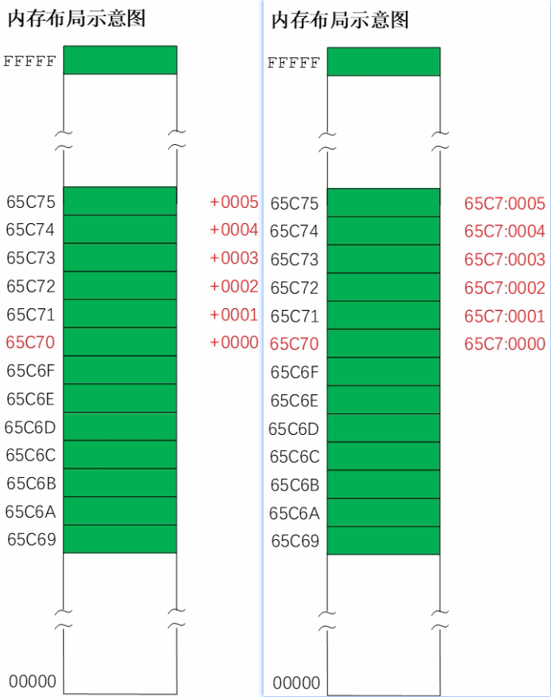
如图，将65C70到FFFFF看成一个段，段内内存单元的偏移地址分别为+0000，+0001，+0002….。为了方便地描述内存单元的地址和段地址的关系，推荐使用新的方法 来标注内存单元地址。如段内第1个内存单元地址为65C7:0000, 其中65C7是65C70末尾去掉0后的段地址，冒号后0000是它在段内偏移地址。用这种方法表示的地址 叫做 逻辑地址
#物理地址 逻辑地址(段起始地址:内存单元在段的偏移量) 65C75 65C7:0005 65C74 65C7:0004 65C73 65C7:0003 65C72 65C7:0002 65C71 65C7:0001 65C70 65C7:0000
在8086系统中，访问任何内存单元都是用段寄存器乘以16形成20位的段地址再和偏移地址相加。
如内存单元22567，转换成段地址和偏移地址，唯一的办法就是假定这个内存单元位于某个段中。
- 寻找以0结尾的物理地址
- 偏移量最大不超过寄存器宽度16位，即4个F。
22567 起始物理地址为22560的段，22567距离起始处相差7个字节，即16进制的7，逻辑地址2256:007 起始物理地址为22550的段，22567距离起始处相差23个字节，即16进制的17，逻辑地址2255:0017 起始物理地址为22540的段，22567距离起始处相差16进制的27，逻辑地址2254:0027 起始物理地址为22530的段，22567距离起始处相差16进制的37，逻辑地址2253:0037 ... 起始物理地址为12570的段，12570距离起始处相差16进制的FFF7，逻辑地址1257:FFF7 起始物理地址为12560的段，22567距离起始处相差16进制的10007，逻辑地址1256:10007 #非法，内存单元22567距离12560段首的偏移量大于FFFF

这是一个合法的段，段的起始物理地址是A0370，段内第1个内存单元的逻辑地址是A037:0000，最后一个内存单元的逻辑地址是A037:FFFF，这个段的长度是65536个字节(FFFF转10进制，2的16次方，65536)，即64KB。 这个段中最后一个单元的物理地址是多少？答案是用最后内存单元的逻辑地址求出，先将逻辑段地址A037乘以16得到A0370，再与逻辑偏移地址FFFF相加，得到B036F。也就是这个段起始于A0370终止于B036F。
练习
如果一个内存单元的逻辑地址是B800:0028，那么，这个内存单元的物理地址是多少？
答案：B8028 。 逻辑段地址B800*16得B8000，再与逻辑偏移地址0028相加，得B8028
如果一个内存单元的物理地址是B0375，请将它表示成三种不同的逻辑地址。
答案：离这个物理地址最近，且比它小的物理段地址为B0370、B0360、B0350。B0375与这三个物理段地址的距离分别为16进制的5、15、25。所以可以有B0370:0005, B0360:0015, B0350:0025
8086处理器可以访问1MB内存。在不浪费任何内存空间且不允许重叠的情况下，这1MB内存可以划分为多少个16字节的段？可以划分为多少个64KB的段？
答案：因为段必须起始于以0结尾的物理地址，而两个相邻的这种地址相差16个字节，比如段地址00000和00010之间相差16个字节。1MB内存有1048576个字节，除以16，结果是65536。所以1MB 内存可以均匀划分为65536个16字节的段。
1MB内存等于1024KB，如果段长度是64KB，那么1024除以64，结果是16。即1MB内存可以均匀划分为16个64KB的段。
汇编语言和汇编软件
主要内容
- 创建汇编语言源程序
- 下载和安装编译器NASM
- 编译汇编语言源程序
- 配套源码和工具的使用
创建汇编语言源程序
简单介绍汇编语言的特点以及如何创建汇编语言源程序
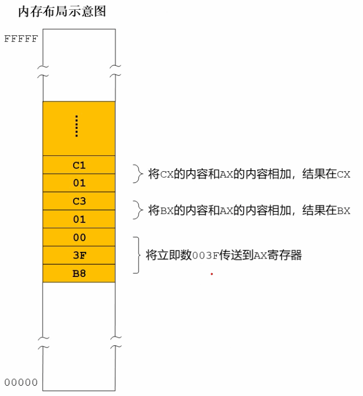
这些指令的意思
- 将立即数003F传送到AX寄存器
- 将BX的内容和AX的内容相加，结果在BX
将CX的内容和AX的内容相加，结果在CX
即使是很有经验的程序员使用这种方式编写指令是很困难的，而且很容易出错。所以汇编语言随之诞生。
- 汇编语言源文件后缀： .asm
- 内容不区分大小写
mov ax, 3fh #立即数003F传送到AX寄存器 add bx, ax #寄存器BX的内容与AX相加，结果在BX add cx, ax #寄存器CX的内容与AX相加，结果在CX
- 寄存器：ax, bx,cx
- mov传送指令，需要2个操作数，目的操作数、源操作数，之间用逗号分开。操作数可以是以h结尾的16进制数(如 3fh)或者0x开头的数。操作数可以是以B结尾的二进制数，操作数可以是10进制数。
mov ax, 3fh MOV AX, 3FH MOV ax, 3FH mov AX, 3fh #16进制3f mov ax, 0x3f #16进制3f mov ax, 63 #10进制63 mov ax, 00111111B #2进制 add bx, ax add cx, ax
下载和安装编译器NASM

用汇编语言编写的程序只是文本和符号，人类能看懂，处理器看不懂。需要通过汇编语言编译器将汇编程序转换成包含处理器指令的程序，提交给处理器执行。
汇编语言的编译器很多，如
- MASM 微软付费软件，太格式化
- NASM 免费使用
NASM官网：https://www.nasm.us/
64位系统下载地址：2.16.03
- 默认安装，安装目录可以自定义
- 添加PATH环境变量 “我的电脑”右键–>属性–>高级系统设置–>环境变量–>Path
- nasm.exe 执行文件
- nasmdoc.pdf 帮助文档
编译汇编语言源程序
exma.asm
mov ax, 0x3f ;将立即数传送到AX寄存器 add bx, ax add cx, ax
在exma.asm所在文件夹路径框输入 cmd
D:\project\assemblyprojs>nasm exam.asm -f bin -o exam.bin
只包含处理器指令，还不能执行，缺少操作系统加载和重定位所需要的信息。
配套源码和工具的使用
- Nasmide64.exe 自己编写的文本编译器
- 选项–>编译器路径设置，找到nasm的安装路径
- 文件–>编译源文件
- HexView.exe 打文件以16进制显示文件内容
- 无法显示的字符用点来表示
汇编语言
mov ax, 0x3f ;将立即数传送到AX寄存器 add bx, ax add cx, ax
机器指令
B8 3F 00 01 C3 01 C1 #B8 是操作码对应 mov 。 3f00是立即数，由于x86采用低端字节序，所以是从后往前念003f #01 c3 对应add bx, ax #01 c1 对应add cx, ax
16进制工具：
- Mac版 hexfiend 下载地址：https://github.com/HexFiend/HexFiend/releases
- Windows 版 010 editor， 下载地址：https://www.sweetscape.com/010editor
- 命令行查看 hexdump -C ctfhub.png
如何执行编译好的程序
主要内容
- 8086加电或者复位时的状态
- 8086地址空间的分配
- 跳转指令
- 硬盘的构造和工作原理
- 一切从主引导扇区开始
8086加电或者复位时的状态
在一个完整的系统中，最底层是处理器，处理器的上面是操作系统，操作系统上是各种应用程序。
如果我们能绕过操作系统或者代替它，让处理器第1个执行我们的程序。
首先需要了解计算机在加电启动时处理器都做了什么？
每当我们加电开机后，处理器会执行一个硬件初始化以及一个可选的内部测试，然后将内部所以寄存器的内容都初始到一个预置的状态。在计算机上都有 一个热启动按钮，它和RESET引脚相连，按下热启动按钮会向RESET引脚发送一个信号，会导致处理器执行硬件初始化和内部测试，并将所有寄存器的内容初始到 一个预置的状态。
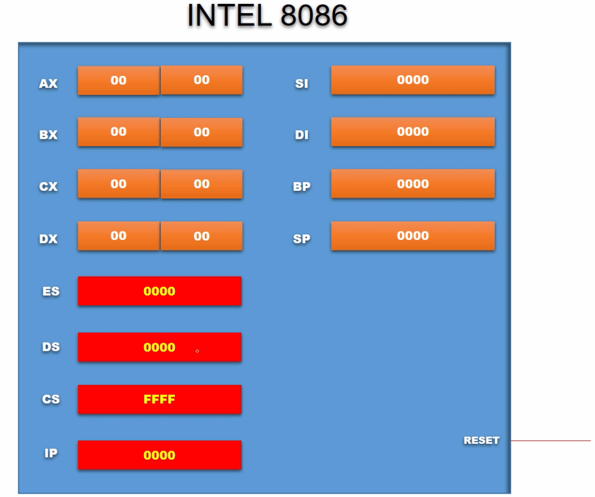
仅适用于8086复位操作后，寄存器状态。后续新处理器不适用
- 代码段寄存器 FFFF
- 其他寄存器的内容都会被初始化为0
- 通过用寄存器 AX/BX/CX/DX/SI/DI/BP/SP
- 数据段寄存器 DS/ES(附加段寄存器)
- 指令指针寄存器 IP
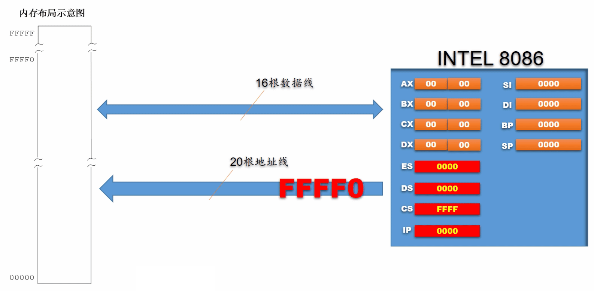
取指令就要发出地址，当处理器加电或者复位后，发出的第一个地址是什么 ？
- 第1条指令
- 处理器开始取指令阶段
- 将段寄存器CS中内容FFFF左移4位，得到20位的数字FFFF0
- 用FFFF0和指令指针寄存器IP中的内容0000(数字0)相加，得到20位的物理地址FFFF0，并送入地址线，去访问内存
- 这将从物理地址FFFF0处取得第1条指令，并加以执行。指令的意思是“???”
- FFFF0距离内存的最顶端只有16个字节。从这里开始执行指令的。
- 如何执行????
- 处理器开始取指令阶段
8086地址空间的分配
8086处理器可以访问1MB的内存，地址范围从00000到FFFFF。在计算机中8086处理器可以发出的地址范围是连续的，从00000到FFFFF。但是 这并不意味着被访问的内存在物理上是一个整体。
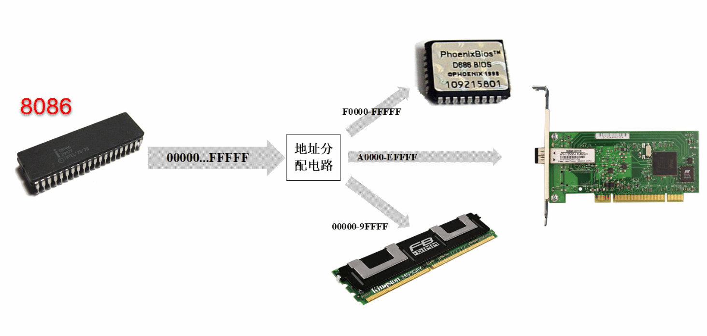
事实上，这个范围会被地址分配电路分成几个独立的部分
- 00000-9FFFF 可读写内存DRAM
- A0000-EFFFF 外部设备的接口电路或者接口卡，如声卡、显卡、网卡
- F0000-FFFFF 特殊的存储芯片ROM BIOS
DRAM
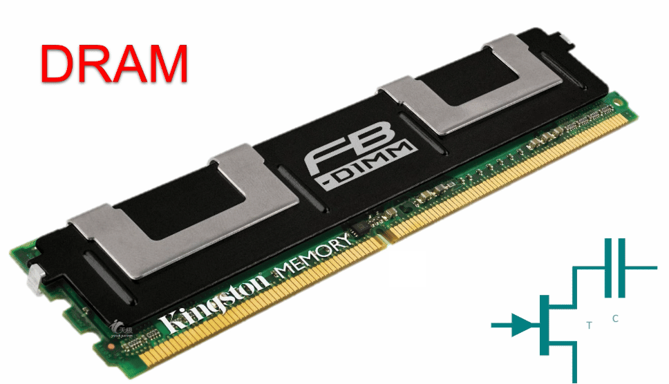
我们平时称为内存条，内存是由字节组成，字节又是由比特组成。为了节约成本并提供容量和集成度，每个比特的存储是靠一个极其微小的晶体管和电容来完成。
电容可以充放电，因此可以通过充电和放电来表示比特0和比特1。但电容很容易泄漏电荷，电容充电后不管它，那它就会慢慢放电。所以这种内存需要定期补充电荷 以维持原先存储的内容。这个过程叫做动态刷新，因此这个存储器也叫动态随机访问存储器，简称DRAM。
断电后，它所保存的内容就会消失。同时当计算机开启时，这部分内存里没有任何有效的数据，处理器不能去这里取指令和执行指令。
外部设备
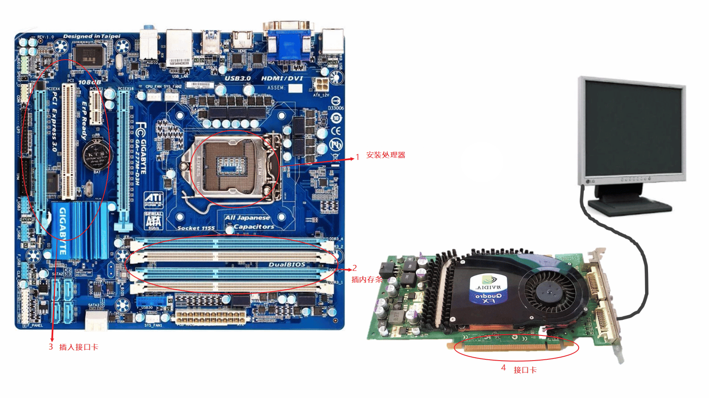
我们的计算机可以连接各种设备，但是设备是不能直接接入的。它们需要通过各自的接口电路或者接口卡接入。
以显卡为例，显示器的工作方式和处理器不同，信号的规程也不一样，所以需要一个接口卡来做信号的匹配和转化。
- 显卡通过电缆连接显示器，给显示器发送视频信号，另外它还要插在计算机的主板上
- 4.有一个卡口，俗称金手指，插入主板接口卡位置
- 计算机主板
- 1.安装处理器
- 2.插内存条
- 3.插入接口卡
显卡插入主板与显示器连接后，显示器就通过接口卡和计算机连接起来了。显卡上有存储器，处理器可以把要显示的文本内容写入显卡上的存储器， 然后显卡负责将它转换成视频信号发送给显示器，这样就能在显示器上看到文本了。
ROM BIOS
这种存储芯片只能用来读取而不能写入。只读存储器，简称ROM。
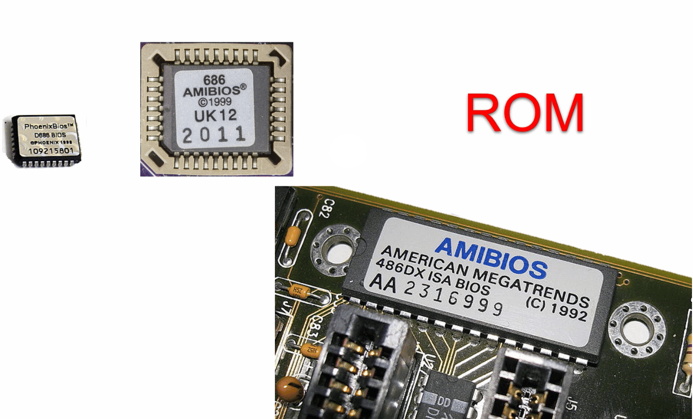
ROM的内容是用特殊手段写入的，上图中可以看到不同的ROM芯片。
和内存条不同，只读存储器不需要刷新，它的内容是预先写入的，即使掉电也不会消失，但是也很难改变。有些ROM的内容在写入后永远无法 再擦除和重写，有些ROM则可以用紫外线和加电来擦除和重写。
ROM的内容可以预先写入，即使掉电不会消失，我们将一些指令和数据固化在硬件中。
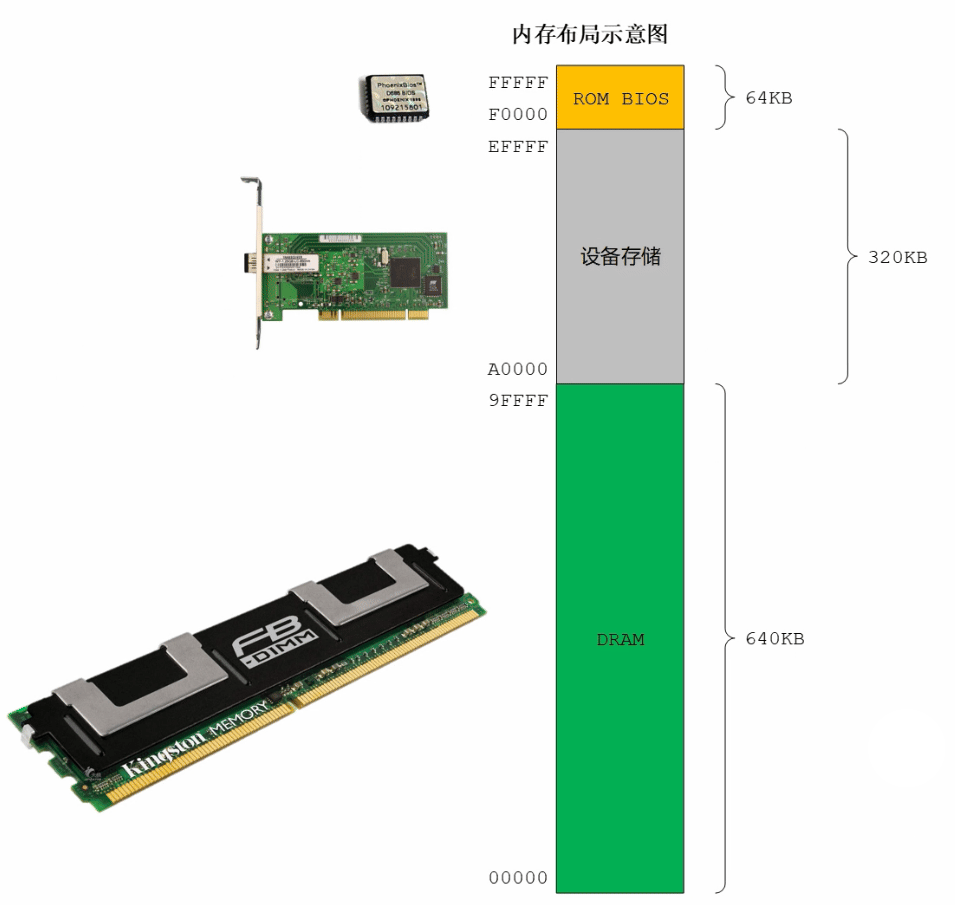
从8086处理器的视角来看
- ROM占据整个内存的顶端，地址范围是F0000-FFFFF， 64KB。
- DRAM，即内存条，地址范围00000-9FFFF，640KB
- 外围设备，地址范围A0000-EFFFF，320KB
8086处理器加电或者复位时，取的第1个指令位于内存地址FFFF0，在ROM中。这个芯片里正好固化了开机时所需要执行的指令。
ROM中是可执行的程序，用来对组成计算机的模块检测诊断和初始化。除此之外，有些硬件对于正常使用计算机是必不可少的，如 键盘、硬盘和显示器，这些ROM还固化了一些程序提供我们调用。因为这些程序是针对最基本的硬件而编写的，所以这个芯片又叫做 基本输入输出系统，简称BIOS。
FFFF0距离内存的最顶端只有16个字节。处理器的取指令和执行指令的方向是从低端向高端推进，具体的指令是什么？？？
跳转指令
如何让处理器从当前位置跑到另一个内存地址处取指令并执行？
FFFFF .... FFFF5 FFFF4 F0 FFFF3 00 FFFF2 EO FFFF1 5B FFFF0 EA #操作码，1.跳转指令 ... 00000
为了保证处理器在加电或者复位后有指令执行，内存的顶端是ROM BIOS，这里固化了开始程序。处理器第1次 取指令的位置是FFFF0，这里存放了一条特殊的指令，跳转指令，由5个字节组成，从下向上数为EA 5B E0 00 F0。
一般来说指令都是一条挨着一条集中存放的，处理器也是按顺序一条一条的取出指令并执行。但是，如果需要，处理 也可以离开当前位置跳到另一个位置，可以向前跳也可以向后跳。处理器的跳转动作是由跳转指令触发的。
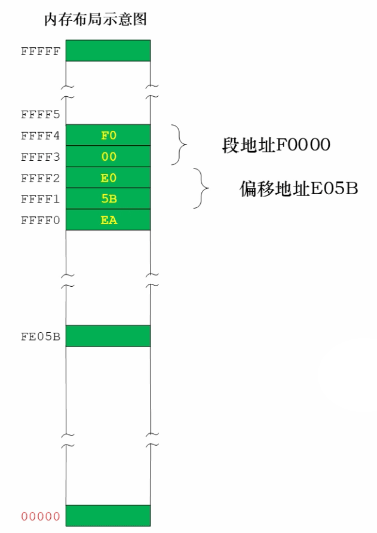
- EA 操作码。1.表示跳转指令。2.跳转的目标位置紧跟在操作码后。分别是16位的偏移地址E05B和16位的段地址F000，intel处理器是低端字节序的。
这条指令用汇编语言表示
JMP 0xF000:0xE05B ;跳转到逻辑地址F000:E05B处取指令并执行
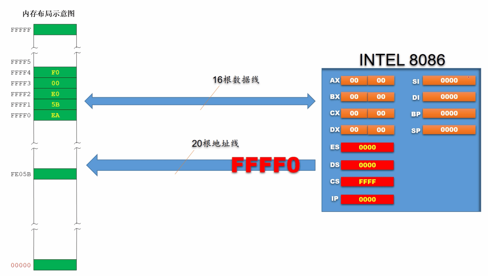
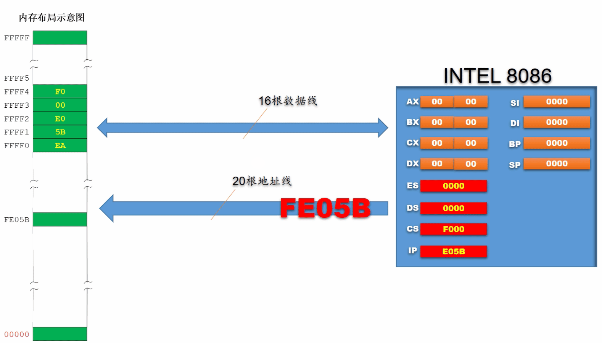
8086处理器加电或者复位时，取的第1个指令位于内存地址FFFF0，在ROM中。这个芯片里正好固化了开机时所需要执行的指令。
- 寄存器状态
- 代码段寄存器 FFFF
- 其他寄存器的内容都会被初始化为0
- 通过用寄存器 AX/BX/CX/DX/SI/DI/BP/SP
- 数据段寄存器 DS/ES(附加段寄存器)
- 指令指针寄存器 IP
- 第1条指令
- 处理器开始取指令阶段
- 将段寄存器CS中内容FFFF左移4位，得到20位的数字FFFF0
- 用FFFF0和指令指针寄存器IP中的内容0000(数字0)相加，得到20位的物理地址FFFF0，并送入地址线，去访问内存
- 这将从物理地址FFFF0处取得第1条指令，并加以执行。指令的意思是“跳转到逻辑地址F000:E05B处取指令并执行”
- 在执行这条指令时，处理器用指令中的段地址和偏移地址来修改CS和IP的内容
- 段寄存器CS的内容被修改为F000
- 指令指针寄存器IP的内容被修改为E05B
- 将段寄存器CS中内容F000左移4位，得到20位的数字F0000
- 用F0000和指令指针寄存器IP中的内容E05B相加，得到20位的物理地址FE05B，并送入地址线，去访问内存，取指令
- 处理器开始取指令阶段
- 第2条指令
- 从内存单元FE05B处向上顺序执行指令。ROM BIOS范围内。
ROM BIOS的容量不大，计算机要想做更多的事件就得离开这个环境，因此在ROM BIOS 还固化了一些指令用来从外部的辅助设备 读取指令到内存，然后让处理器加以执行。即，从U盘或者硬盘读取程序把它们放进内存。
通常在U盘或者硬盘中存放着操作系统的代码，所以是从这些存储设备里读取操作系统，然后执行操作系统代码从而启动操作系统。
练习
以哪些指令与JMP 0xF000:0xE05B等效，等效就是得到的物理地址一样：ABD
A. JMP 0xFE05:0x000B B. JMP 0xFE00:0x005B C. JMP 0xFFFF:0x000B D. JMP 0xFD00:0x105B
硬盘的构造和工作原理
了解硬盘的构造和工作原理
处理器从内存取指令和操作数，外部存储设备是内存的后备存储设备。外部存储设备的内容只有在加载到内存之后才能被处理器访问。
外部存储设备有
- U盘
- 机械硬盘HDD，也叫机电式硬盘，由机械和电子电路组成。成本低
- 固态硬盘SSD，也叫集成电路式硬盘，由集成电路存储芯片组成。成本高
机械硬盘构造
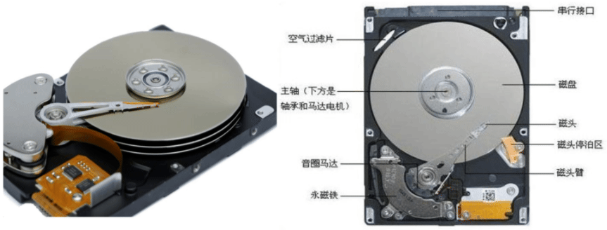
机械硬盘（HDD）：Hard Disk Drive
如这幅图所示，这是一个被拆开的硬盘中间的盘片，这个圆盘是用于记录数据的 铝合金盘片。这个盘片是固定在中心的轴上，这个轴由一个高速旋转的马达驱动， 附着在盘片表面的这个扁平的锥状物。它是用来读写数据的磁头，可以来回转动。 硬盘是多盘片密封高速旋转的。硬盘的盘片采用的是铝合金作为基片，并在表面 涂上磁性物质来记录二进制比特。这样一来就使得它的盘片具有较高的硬度，所 以称之为硬盘。为了进一步搞清楚硬盘的内部构造，我们这里给出了更为详细的 图示。
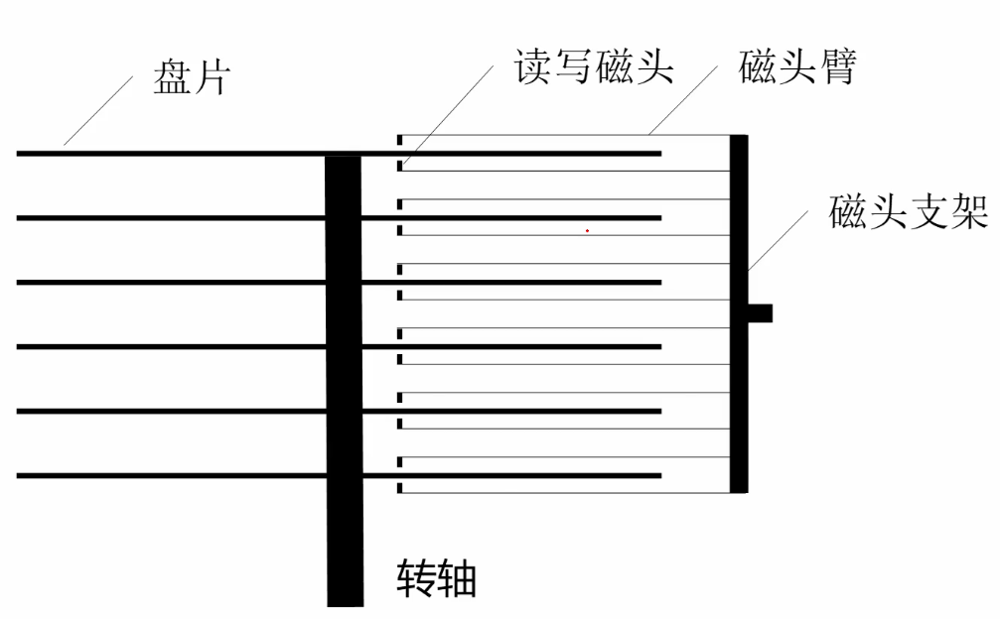
硬盘可以只有一个盘片，那么这个时候我们称之为单碟。硬盘也可能有好几个盘片，比如这里一共有 6 个盘片，这是一个侧切面。 无论如何，所有的碟片、盘片都穿在同一个轴上，这是轴，称为主轴、转轴都可以。所有的盘片是由电动机带着一起高速旋转，一般来说转速可以达到每分钟 3, 600 转，或者是 7, 200 转。有的能够达到 1 万多转。 这个参数就是我们常说的转每分钟，简写为 rpm 转每分钟。
每个盘片都有两个磁头。磁头用英语叫做head。磁头是附着在盘片表面的，每个盘片有上下各一个，所以一个盘片有两个磁头。通常我们用磁头来指代盘面。 磁头都有编号，从第一个盘面的第一个磁头开始编号为0。比如对于第一个盘片来说，上面的磁头编号为0，下面的磁头编号为1。 相应的，对于第二个盘片来说，上面的磁头编号为2，下面的磁头编号为3。以此类推。
每个磁头并不是单独移动的，相反，它们都是通过磁头臂固定在一个支架上，磁头臂的支架用来固定磁头臂和磁头，然后是由步进电机带着一起在盘片的中心和边缘之间来回摆动。也就是说它们是同进退的。 从这里可以看出，由步进电机来驱动磁头，而步进电机是由脉冲驱动，每次可以旋转一个固定的角度，也就是可以步进一次。 磁头由磁头壁带动，在盘片的中心和边缘之间来回移动，这样来读写数据。
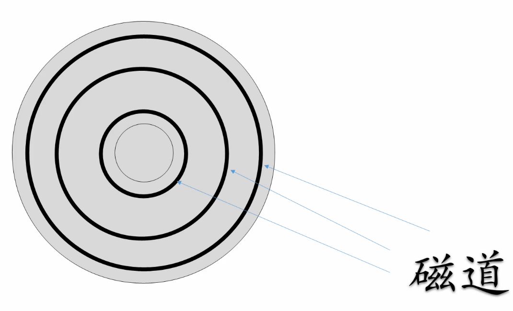
可以想象，当盘片高速旋转时，磁头每步进一次都会从他所在的位置开始绕着圆心画出一个看不见的圆圈，那么这就是磁道。
其实磁道是看不见的，当磁头围绕着这个盘片的中心，在中心和边缘之间来回摆动时，都会画出一个一个的圆圈，你看不见的圆圈，那么这就是磁道track。
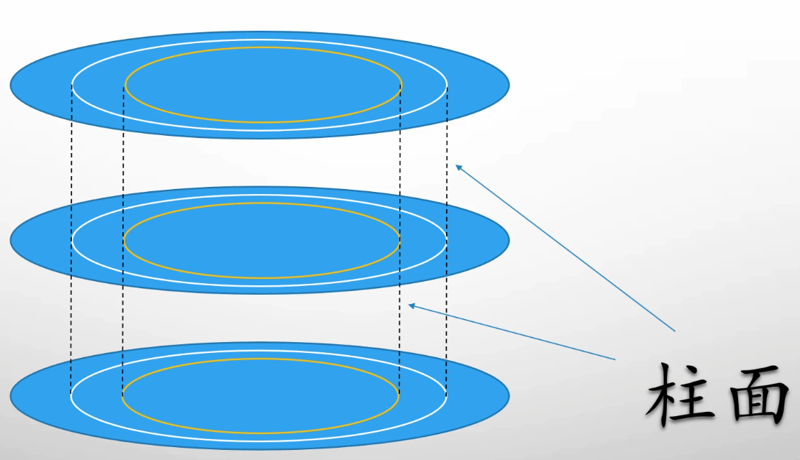
磁道是数据记录的轨迹，因为所有磁头都是联动的，所以每个盘面上的同一条磁道又可以形成一个虚拟的圆柱，叫做柱面，用英语来说就是Cylinder。 磁道或者柱面也要编号，是从盘面的最边缘那条磁道开始向着圆心的方向从 0 开始编号。比如说在最边缘的磁道编号是0，然后依次是1，2，3给每一条磁道编号，对于其他盘面来说也是一样的，也是依次编号。
这个柱面是一个用来优化数据读写的概念。初看起来用硬盘来记录数据时，应该是先将一个盘面填满之后再填写另外一个盘面。 实际上，移动磁头是一个机械动作，看似很快，但是对于处理器来说却非常漫长，这就是寻道时间。 为了加速数据在硬盘上的读写，最好的办法就是尽量保持磁头不动，这样当0面的磁道。比如说这条磁道不足以容纳要写入到数据时，也就是说当这一条磁道被写满了，但是数据还没有写完， 那么这个时候就应当把剩余的数据写在一面的另外一条磁道上，就是这个盘片的下面一条磁道。如果还写不下，那么就继续把剩余的部分写在 2 面的同一条磁道上，比如说因为数据量非常大， 这一条磁道写满了，然后反面的同一条磁道也写满了，但是数据还有还没写下，那么就继续写在第二个盘片的这一面的同一条磁道上。 换句话说，在硬盘上数据的访问是以柱面来组织的。移动磁头，它的消耗的时间比较长，所以尽量保持磁头不动，然后把数据都记录在同一个柱面的相同磁道上，而不是说把数据按照同一盘面的不同磁道来记录。
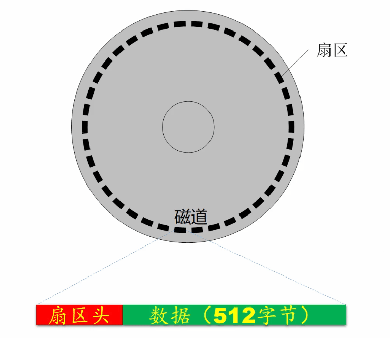
实际上磁道还不是硬盘数据读写的最小单位，磁道还要进一步的划分为扇区。 比如说中间的这个虚线是一条磁道，那么虚线中的每一段，每一个黑方块都是一个扇区。 可以看出在将磁道划分成许多分段之后，每一部分都呈扇形，这就是扇区的由来。每条磁道能够划分成几个扇区，这要取决于磁盘的制造者，但是通常是 63 个扇区，而且每个扇区都有一个编号。
与磁头和刺道不同，扇区的编号是从1开始的，我们说过磁头的编号和磁道的编号都是从 0 开始，但是扇区是从一开始编号。 在每条磁道上，第一个扇区它的编号是1，最后一个扇区它的编号是63。这一点需要注意。 扇区与扇区之间是以间隙或者说空白来间隔的。 再来看每个扇区，每个扇区是以扇区头和512 个字节的数据区组成。 扇区头包含了每个扇区自己的信息，主要有本扇区所在的磁道号、磁头号以及本扇区自己的扇区号，这些信息用来供硬盘的定位机构使用。
现代硬盘还会在扇区的头部包括一个指示扇区是否健康的标志，因为每个扇区在反复读写之后可能会损坏，那么这个时候这个标志扇区头里面的这个标志就可以指示这个扇区是否健康，是否还能继续使用。
一切从主引导扇区开始
如何通过主引导扇区开始
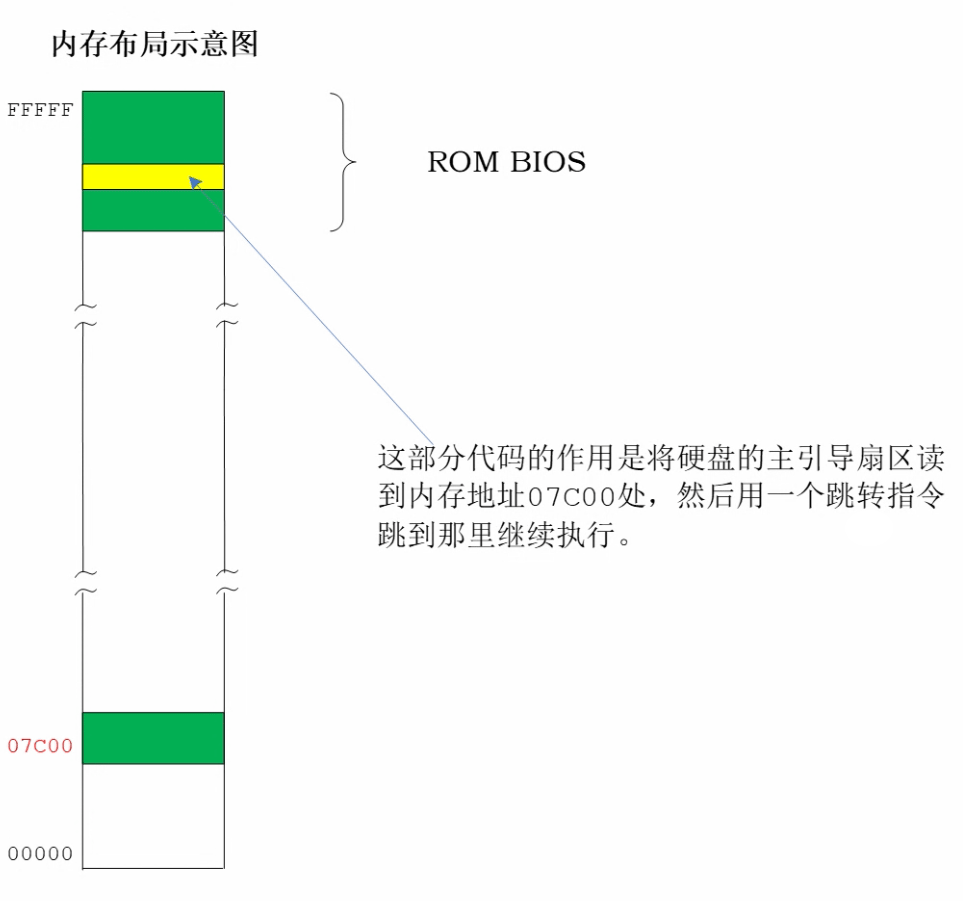
前面说到当 rom BIOS 完成自己的使命之前，最后要做的一件事，是从外部存储设备读取更多的指令来交给处理器执行。 现实的情况是，绝大多数时候对于 rom BIOS 来说，硬盘都是首选的外部存储设备。
在 rom BIOS 里面这个黄色的部分是处理器在离开 room 之前所要执行的最后一段代码。这部分代码的作用是将硬盘的主引导扇区读到内存地址 07C00 处，然后用一个跳转指令跳到那里继续执行。
主引导扇区：在硬盘0面1扇区
如果计算机的设置是从硬盘启动，那么 rom BIOS 将读取硬盘主引导上去的内容，将它加载到内存地址 07C00 处， 也就是这里将硬盘的主引导扇区加载的这个位置。然后用一个跳转指令跳到这里接着执行。 这个跳转指令是处理器的执行离开 rom BIOS 时所执行的最后一条指令。它的汇编语言指令形式是 JMP 0x0000: 0x7C00
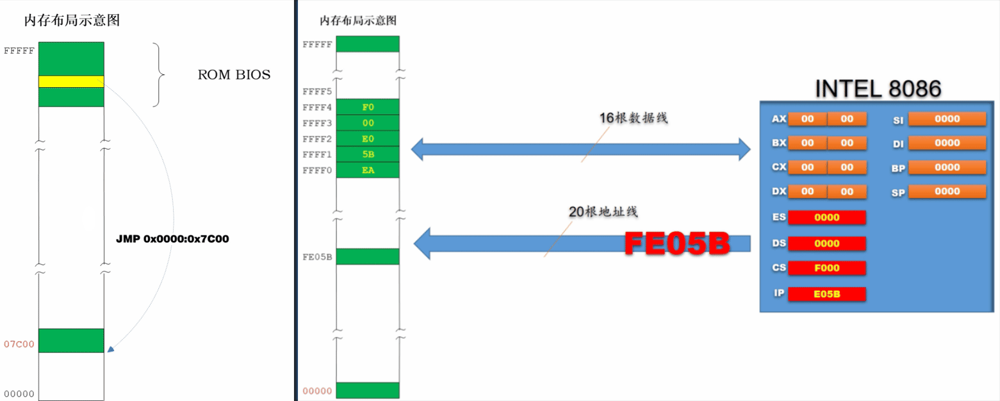
8086处理器加电或者复位时，取的第1个指令位于内存地址FFFF0，在ROM中。这个芯片里正好固化了开机时所需要执行的指令。
- 寄存器状态
- 代码段寄存器 FFFF
- 其他寄存器的内容都会被初始化为0
- 通过用寄存器 AX/BX/CX/DX/SI/DI/BP/SP
- 数据段寄存器 DS/ES(附加段寄存器)
- 指令指针寄存器 IP
- 第1条指令
- 处理器开始取指令阶段
- 将段寄存器CS中内容FFFF左移4位，得到20位的数字FFFF0
- 用FFFF0和指令指针寄存器IP中的内容0000(数字0)相加，得到20位的物理地址FFFF0，并送入地址线，去访问内存
- 这将从物理地址FFFF0处取得第1条指令，并加以执行。指令的意思是“跳转到逻辑地址F000:E05B处取指令并执行”
- 在执行这条指令时，处理器用指令中的段地址和偏移地址来修改CS和IP的内容
- 段寄存器CS的内容被修改为F000
- 指令指针寄存器IP的内容被修改为E05B
- 将段寄存器CS中内容F000左移4位，得到20位的数字F0000
- 用F0000和指令指针寄存器IP中的内容E05B相加，得到20位的物理地址FE05B，并送入地址线，去访问内存，取指令
- 处理器开始取指令阶段
- 第2条指令
- 从内存单元FE05B处向上顺序执行指令。ROM BIOS范围内。
- 离开ROM BIOS最后一条指令，JMP 0x0000: 0x7C00
通常主引导扇区的功能是继续从硬盘的其他部分读取更多的内容加以执行。像 Windows 这样的操作系统，就是采用这种接力的方法一步一步把自己运行起来的。 就是说在主引导战区里有一些代码用来从硬盘的其他部分读取内容，这样来接力执行。这样的话操作系统在硬盘的其他部分，而主引导战区负责从硬盘的其他部 分来读取操作系统的代码，把它读到内存，然后一步一步的这样接力执行的最终结果就是操作系统被启动。
如果我们把自己编译好的程序写到主引导扇区，不也能够让处理器执行吗？这是可以的，而且这几乎是在不依赖操作系统的情况下，让我们的程序可以执行的唯一方法。
不过坏消息是，如果你改写了硬盘的主引导山区，那么你安装的 Windows 或者Linux，以及任何你正在使用的操作系统都会瘫痪，无法启动了。那么我们该怎么办呢？ 答案是在你现有的计算机上再虚拟出一台计算机来，这样他们互不干扰。
所谓虚拟机，就是在你的计算机上再虚拟出另外一台计算机了。这台虚拟出来的计算机和真正的计算机一样，可以启动、可以关闭，还可以安装操作系统，安装和运行各种各样的软件或者访问网络。 总之，你在真实的计算机上能做什么？在它里面一样可以做。于是我们就得到了两台计算机，而且他们都可以操作。
虚拟机特点：
- 虚拟机仅仅是一个软件，运行在各种主流的操作系统上。它以自己运行的真实计算机为模板，虚拟出另一套处理器内存和外部设备来。它的处理能力完全来自于背后那台真实的计算机。
- 尤其重要的是，针对某种真实处理器所写的任何指令代码通常都可以正确无误地在该处理器的虚拟机上执行。实际上，这也是虚拟机具有广泛应用价值的原因之所在。
- 任意折腾。为了研制防病毒软件，测试最新的操作系统或者软件产品，软件公司通常需要多台用于做实验的计算机。采用虚拟机就可以避免反复重装软件系统的麻烦。当这些软件系统崩溃时，崩溃的只是虚拟机，而真实的物理计算机丝毫不受影响。
- 易于教学。虚拟机利用软件来模拟完整的计算机系统，无需添加任何新的设备。而且与主计算机系统是隔离的。在虚拟机上的任何操作都不会影响到物理计算机上的操作系统和软件。这对于拥有大量计算机的培训机构来说，可以极大地节省维护上的成本。